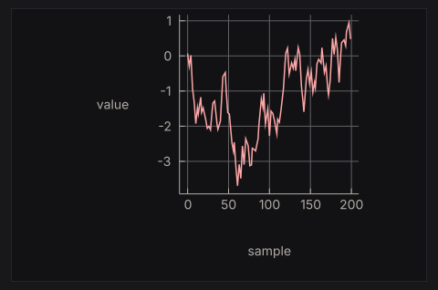

Tutorial 3: Live Data & Background Work
A view must finish quickly so the interface stays responsive. Slow work like querying a database, fetching a URL, or reading from a sensor cannot block inside NanoUI. Instead, nano-ui runs background work on Haskell worker threads through two handles, Task and Stream, and wakes the event loop whenever new results arrive.
This tutorial walks through three panes from packages/nano-ui-demo/examples/Tasks.hs and the real-time chart in LiveChart.hs. Run them with:
cabal run nano-ui-example-tasks
cabal run nano-ui-example-live-chart
Important
Always compile executables with
-threaded. While a background job runs, the main loop sleeps in the OS event wait; without the threaded runtime, that wait blocks worker threads too.
1. Allocate handles once
A Task runs a single keyed job to completion, while a Stream pushes a series of updates over time. Allocate both once in IO during startup, just like newVar:
-- | One handle per job. The types fix each job's key and result.
data App = App
{ appSearch :: !(Task Text [Text])
, appFlaky :: !(Task Int Text)
, appProgress :: !(Stream () Int)
}
newApp :: IO App
newApp = App <$> newTask <*> newTask <*> newStream
Each handle locks in its key and result types, keeping unrelated jobs separate.
2. Background search
We debounce user input with searchInput', which only sets respChanged once typing pauses instead of firing on every keystroke. The committed query then becomes the task’s key:
searchCard :: App -> NanoUI ()
searchCard app = do
query <- useVar ""
committed <- useVar ""
resp <- searchInput' "Find a word" query
-- searchInput' reports a change once typing pauses, so a fast typist
-- starts one job, not one per keystroke. Keying by the query itself would
-- also work; each new key would just kill the job before it.
when (respChanged resp) (writeVar committed =<< readVar query)
key <- readVar committed
status <- useTaskStatus (appSearch app) key (slowSearch key)
-- While a new query runs, TaskRunning carries the previous results, so
-- the list stays put instead of flashing empty.
let
(hits, running) = case status of
TaskRunning previous -> (fromMaybe [] previous, True)
TaskDone found -> (found, False)
TaskFailed _ previous -> (fromMaybe [] previous, False)
rowWith (tight . gap 8 . alignMid) $ do
-- The spinner comes and goes, so it sits in a scope: the label after it
-- keeps its widget id either way.
scope (when running spinner)
muted
( T.pack (show (length hits))
<> " matches"
<> if running then " (searching...)" else ""
)
rowWith (wrap . gap 6 . fillW) $
forM_ (take 24 hits) $
\w -> withKey w (label w)
slowSearch is ordinary blocking IO:
slowSearch :: Text -> IO [Text]
slowSearch q = do
threadDelay 500000
let
found = filter (T.isInfixOf (T.toLower q)) wordList
length found `seq` pure found
Here is how useTaskStatus coordinates the worker with the UI loop:
- On the first frame with a new key, it spawns a worker thread for that key.
- On subsequent frames while the worker runs, it returns immediately with
TaskRunning previous. Keeping the previous result lets the UI show existing rows instead of flashing empty. - When the worker completes, it wakes the loop so the next frame receives
TaskDone. - If the key changes before the worker finishes (for instance, the user commits a new search), the old thread is cancelled with an asynchronous exception and a fresh worker starts.
If you only need the latest available value and do not care about distinguishing loading or error states, useTask is shorter:
fileView :: App -> Text -> NanoUI ()
fileView app path = do
contents <- useTask (appFile app) path (T.readFile (T.unpack path))
label (fromMaybe "Loading..." contents)
3. Retrying a failed job
If a task throws a synchronous exception, useTaskStatus returns TaskFailed err previous. To let a Retry button rerun the same input, include an attempt counter in the key:
flakyCard :: App -> NanoUI ()
flakyCard app = do
attemptVar <- useVar (0 :: Int)
attempt <- readVar attemptVar
-- Same input every time, so the attempt number is the key: bumping it is
-- what reruns the job.
status <- useTaskStatus (appFlaky app) attempt (flakyRequest attempt)
-- Each branch declares different widgets, so the whole case is one scope.
scope $ case status of
TaskRunning _ -> rowWith (tight . gap 8 . alignMid) $ do
spinner
label "Contacting the server..."
TaskDone reply -> rowWith (tight . gap 8 . alignMid) $ do
label reply
whenM (button "Run again") (modifyVar attemptVar (+ 1))
TaskFailed err _ -> rowWith (tight . gap 8 . alignMid) $ do
danger (T.pack (displayException err))
whenM (button "Retry") (modifyVar attemptVar (+ 1))
Two rules stand out here:
- Keys control restarts. A task only restarts when its key changes. Including an integer attempt counter guarantees that clicking Retry always produces a fresh key.
- Wrap status branches in
scope. Eachcasebranch renders different widgets, soscopekeeps widget IDs stable for everything that comes after the card.
Because cancellation delivers an asynchronous exception, always manage external resources inside a job with bracket:
job :: Text -> IO [Text]
job q = bracket (connect info) disconnect $ \conn -> runQuery conn q
4. Streams: many updates, one frame
Use a Stream when a background producer pushes values repeatedly, such as progress updates, live telemetry, or streamed LLM tokens. The producer receives an update callback and runs until it returns or is cancelled:
progressCard :: App -> NanoUI ()
progressCard app = do
running <- useVar False
checkbox "Run" running
isRunning <- readVar running
-- When "Run" is unticked 'useStream' is not called, and that alone kills
-- the producer: there is no stop button to wire up. Ticking it again
-- starts a fresh producer from the initial value. The scope keeps
-- anything declared after it on stable ids.
scope $ when isRunning $ do
pct <- useStream (appProgress app) () (0 :: Int) $ \update ->
forM_ [1 .. 100] $ \i -> do
threadDelay 50000
-- Each update wakes the loop for one frame; updates that arrive
-- between frames share it.
update (const i)
progressBar (fromIntegral pct / 100)
muted
( if pct >= 100
then "Done. Untick and tick Run to start over."
else T.pack (show pct) <> "%"
)
- Stop a stream by stopping its call. When
isRunningbecomesFalse, skippinguseStreamfor a frame automatically cancels the producer thread. - Updates coalesce automatically. If the producer calls
updatefive times before the next frame renders,nano-uiruns one frame with the latest value. - Stopping resets stream state. When the stream restarts, it starts back from its initial value (
0here). If you want pause and resume instead of restart, save the latest value outside the stream and pass it back in as the initial value (as the live chart below does). - Keep persistent hooks outside tabs. Just like
useTask, auseStreamcall that is skipped for an entire frame cancels its worker.
When the progress stream is paused, the window stops redrawing and uses no CPU.
5. A live chart
To plot streaming data, pair a Stream with a PlotCache. Allocate the cache once in IO and pass it to plot:
data App = App
{ appFeed :: !(Stream () Feed)
, appSaved :: !(Var Feed)
, appPlots :: !PlotCache
}
newApp :: IO App
newApp = App <$> newStream <*> newVar emptyFeed <*> newPlotCache
When paused, the view skips useStream and draws the last saved feed; resuming starts a new stream seeded with that saved state:
view :: App -> NanoUI ()
view app = columnWith (padAll 16 . gap 12 . grow) $ do
running <- useVar True
isRunning <- readVar running
saved <- readVar (appSaved app)
-- While running, the stream is the source of truth; 'saved' only seeds a
-- restarted producer and is ignored after its first frame. While paused,
-- 'useStream' is not called and the saved samples are shown instead.
feed <-
scope $
if isRunning
then useStream (appFeed app) () saved $ \update -> forever $ do
threadDelay 100000
update advance
else pure saved
rowWith (tight . gap 8 . alignMid . fillW) $ do
whenM (button (if isRunning then "Pause" else "Resume")) $ do
when isRunning (writeVar (appSaved app) feed)
writeVar running (not isRunning)
muted
(if isRunning then "Live: a sample every 100 ms" else "Paused: the loop is idle")
let
points = feedPoints feed
-- A crosshair for reading values off the plot; the response reports the
-- sample nearest the pointer.
resp <-
withCursorShape
UiCursorCrosshair
(plot (appPlots app) (fillW . minH 300) (walkChart points))
rowWith (tight . gap 16 . alignMid . fillW) $ do
let
ys = fmap snd points
-- Both parts come and go, so each sits in a scope.
scope $
if Seq.null ys
then muted "Waiting for the first sample..."
else do
kv "min" (fmt (minimum ys))
kv "max" (fmt (maximum ys))
kv "last" (fmt (feedLevel feed))
scope . for_ (plotHover resp) $ \hover ->
kv
"cursor"
( "#"
<> T.pack (show (round (hoverDataX hover) :: Int))
<> " = "
<> fmt (hoverDataY hover)
)
Feed, advance, and fmt live in LiveChart.hs, and walkChart constructs the Chart value:
walkChart :: Seq (Double, Double) -> Chart
walkChart points =
withGrid GridBoth
. withLegend LegendNone
. withXAxis "sample"
. withYAxis "value" $
chart [line "walk" points]
After 200 samples fill the rolling window, the chart looks like this:

The plotting API is compact:
line,scatter,bar,area, andstepconstruct series from(x, y)points (or(label, value)pairs for bars).chartcombines a list of series, andwithGrid,withLegend,withXAxis,withYAxis, andwithTitleconfigure axes and labels.plot cache layout theChartrenders the chart and returns aPlotResponsewhoseplotHoverfield gives the data point closest to the pointer.
Constructing a Chart value on every frame is cheap, and comparing a few hundred points takes almost no time. Rebuilding the underlying vector geometry is the expensive part, and PlotCache skips that rebuild whenever the chart and theme match the previous frame.
6. Things to try next
- Key a search task directly on the live query text (without debouncing) and observe how cancellation behaves compared to
searchInput'. - Stream Markdown tokens into
NanoUI.Markdownwith incremental appends (see Ecosystem Packages). - Virtualize a 100,000-row log view using
getScrollMetricsUi(see Layout & Scrolling andLogs.hs). - Swap the streaming chart for a one-shot
Taskthat loads a full dataset from disk.
For the full lifecycle details of tasks, streams, animations, and timers, see Async Work & Animation.